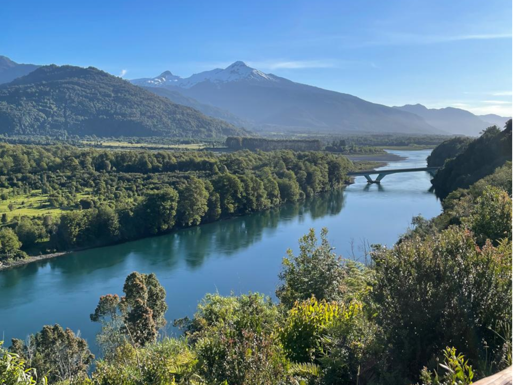
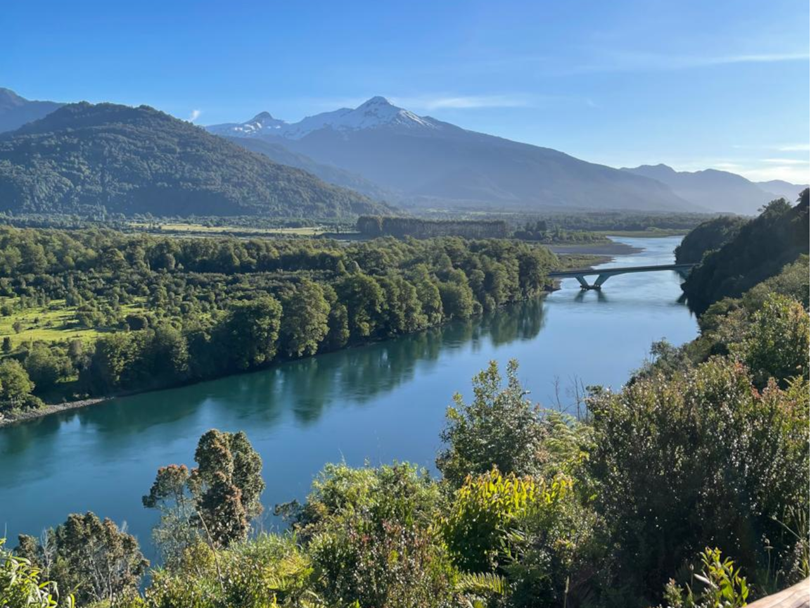

Expedición Callac
Recorridos guiados hacia la mítica laguna, atravesando bosques milenarios. Una aventura inolvidable.
Ver Detalles


 


En Refugio Alma Lodge creemos que la verdadera desconexión ocurre cuando el confort se encuentra con la naturaleza. Nuestro proyecto nace en el corazón de Puelo, una de las zonas más prístinas y mágicas del sur de Chile, donde diseñamos cabañas boutique pensadas para quienes buscan descanso, aventura y una conexión auténtica con el entorno.
Cada espacio combina estética rústica moderna, calidez sureña y un profundo respeto por el territorio. Más que un alojamiento, somos un refugio premium donde la experiencia del huésped es el centro de todo.
Somos un operador turístico premium que ofrece actividades privadas, auténticas y seguras, diseñadas para quienes desean explorar el Valle de Puelo y sus maravillas naturales.
Recorridos guiados hacia la mítica laguna, atravesando bosques milenarios. Una aventura inolvidable.
Ver DetallesSiente la adrenalina y la paz de volar sobre el bosque nativo con una vista inigualable del valle.
Ver Detalles


En el corazón del Valle de Puelo, rodeados de naturaleza en estado puro.
Refugio Alma Lodge está ubicado en uno de los rincones más hermosos y silenciosos del sur de Chile: el Valle de Puelo. Un territorio de montañas imponentes, ríos cristalinos, bosques milenarios y rutas escénicas que conectan directamente con la cordillera de los Andes. Aquí, el tiempo se detiene y la naturaleza te invita a desconectar para reconectar contigo mismo.
Para consultas generales, alianzas o prensa, puedes escribirnos directamente usando el formulario o a un correo genérico.